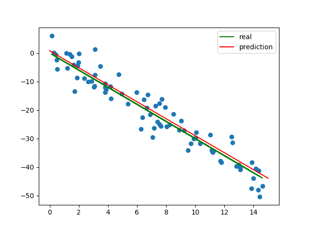

Tensorflow , 深度学习 , 线性回归
这里用的是 tf 底层 API，先导入所需要的包，并设置好一些超参数
import numpy as np |
然后自己生成随机数据点，用以稍后的训练，顺便把数据点先画好
HOW_MANY = 80 # 数据点个数 |
设置所需节点
X = tf.placeholder(tf.float32) |
设置模型（线性）和 loss function、optimizer
pred = w * X + b |
初始化 Variables
with tf.Session() as sess: |
分批投喂数据进行训练
# 仍在 with 里边 |
训练完成，输出相关信息，完成图表并展示
# 仍在 with 里边 |
如果学习率设置得太高，可能会导致在 Optimizer 找到合适方向前，loss function 的值就已经爆表了，最后得到的 w 跟 b 都是 NaN。所以比较稳妥的方法是，减小学习率，增加训练次数。
Update: 对于随机梯度下降来说，Tensorflow 会自动记录节点的运算规则并求导，不存在“找不到合适方向”的情况。不过如果
loss function越来越高的话，基本都是由于学习率过高，不断跨过沟底。同时，沟壁的梯度（一般）越远离极小值点则越大（所以更新的步伐也越来越大），最终造成loss function的值越来越离谱。
试着跑了一下，能得到如下输出：
true_w = -3, true_b = 0 |
